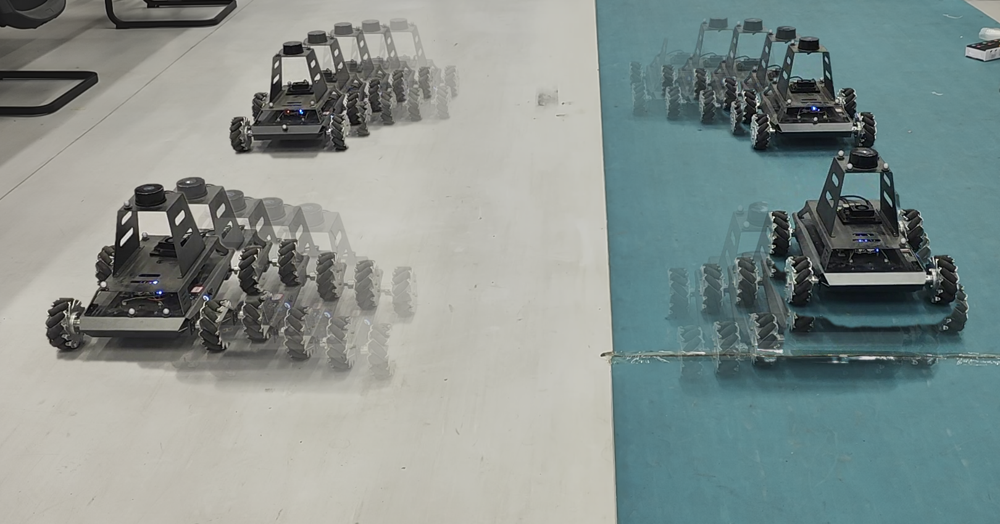
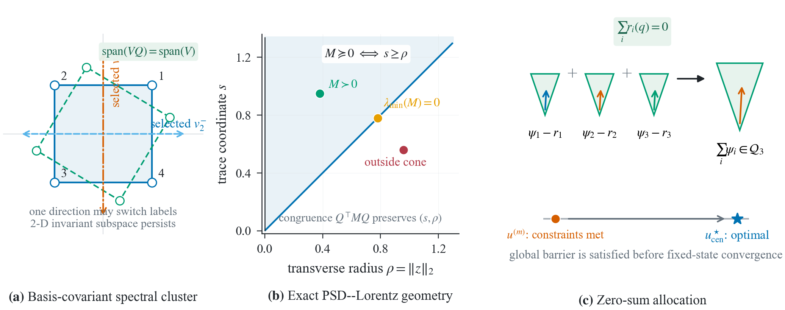
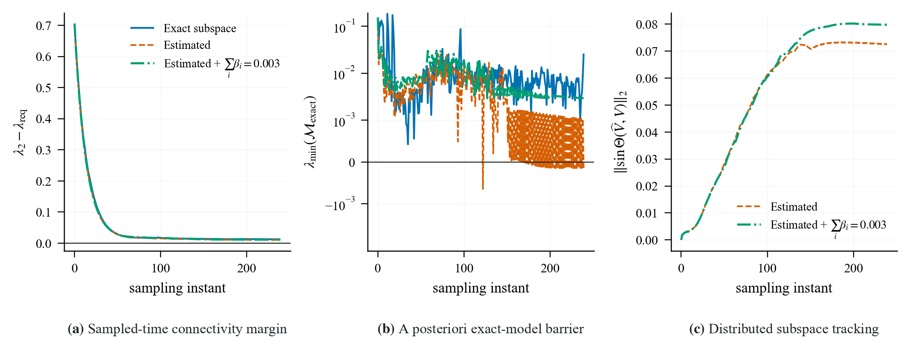
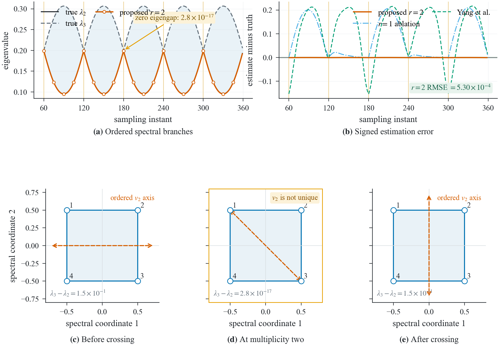
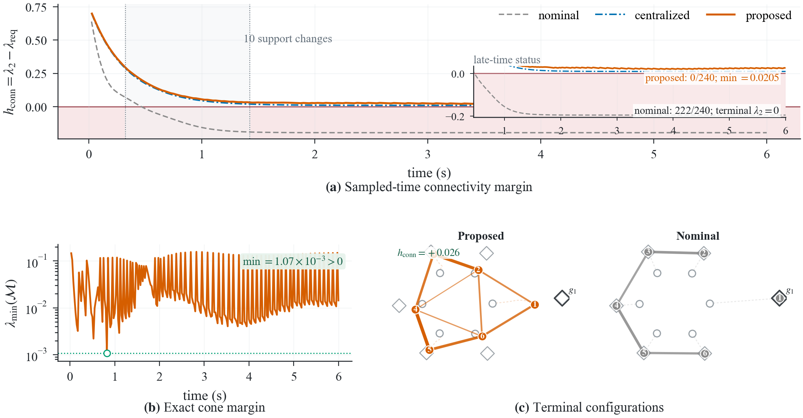
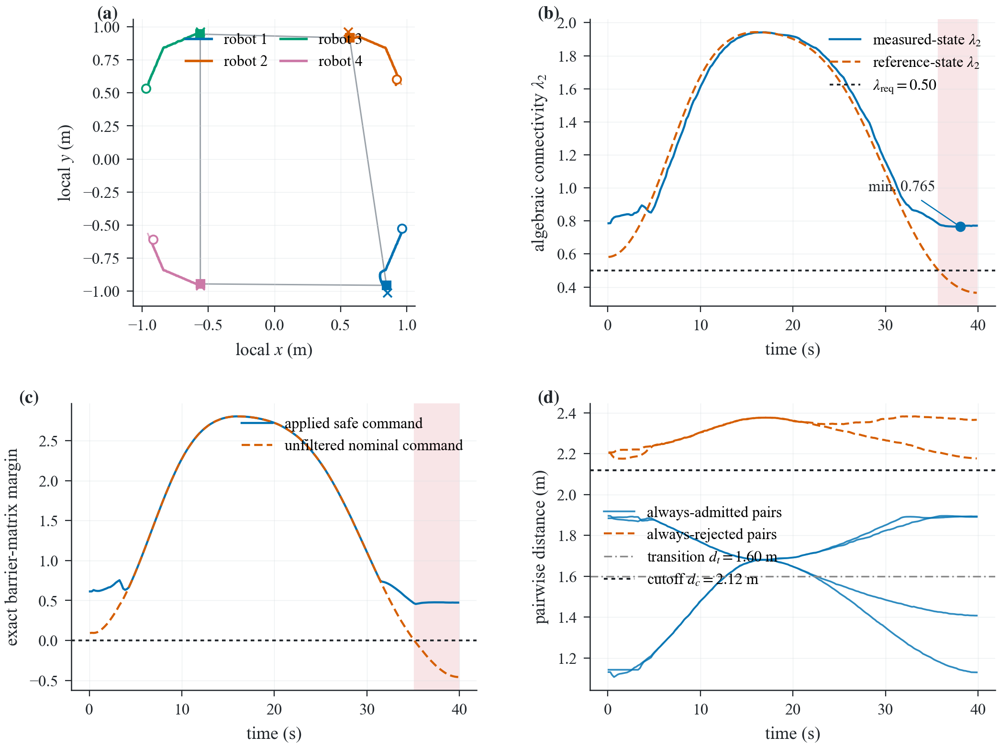

Multi-robot teams must move toward their goals while maintaining the communication structure that makes coordination possible. We study a distributed controller that estimates the graph's Fiedler subspace from neighbor messages and uses it to enforce connectivity-aware, violation-free control constraints. The same pipeline is evaluated in numerical experiments, a networked MuJoCo preflight, and a four-robot motion-capture experiment.
Experimental overview: the team moves, communicates, estimates connectivity, and records the resulting safety evidence.

The Fiedler subspace gives each node a compact spectral view of how the communication graph is connected.
Each robot receives only local neighbor packets. Finite-round diffusion aligns the estimated low-dimensional subspace; a local conic controller then limits motion that would reduce connectivity below the required margin.
Measure neighbors → estimate the Fiedler subspace → solve a local safety-constrained command → execute and log.
The controller is evaluated at every iterate, so an incomplete allocation or a changing topology does not create an unverified intermediate command.




In the current MuJoCo preflight, the minimum sampled algebraic connectivity is 0.588418, with 0/200 deadline misses under the fixed-delay model and a maximum projected cycle time of approximately 122.1 ms. These are simulation and integration results; target-board and Wi-Fi claims require the hardware tests described in the repository.
Our canonical implementation, experiment scripts, figures, and machine-readable records are available in the public repository.
@misc{fiedler_subspace_coordination,
title = {Fiedler-Subspace: Distributed Connectivity-Preserving Coordination},
author = {Tan-Wei and collaborators},
year = {2026},
url = {https://github.com/Tw6249/Fiedler-Subspace}
}